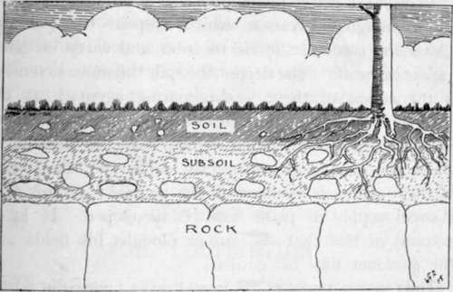

Chapter I. The Soil
Description
This section is from the book "School Gardening", by W. Francis Rankine. Also available from Amazon: School Gardening.
Chapter I. The Soil
Gardening is the oldest and at the same time the most interesting industry in existence. It offers pleasure to all and profit to many ; there is a pleasure in the beauty of the flowers that may be grown ; there is a great profit in the health-giving exercises it affords us, and in the knowledge that the observant gardener acquires in the course of his work. Further, it is an art which demands intelligence, energy, and patience ; in fact, without these, success cannot be secured.
Success in everything depends on a clear comprehension of the underlying reason of things, and in no work of life is this so true as in gardening. The gardener who understands the reasons that underlie the operations he carries on in the garden has every opportunity of obtaining satisfactory results. On the other hand, it is quite possible to perform these operations in a satisfactory manner without any knowledge of the reasons which explain why they are done ; yet, undoubtedly, a knowledge of the theory of gardening enables the worker to more thoroughly and intelligently carry out his practice. Theory without practice is useless, and practice without theory is a drawback. The greatest measure of success is realised by the gardener who possesses a well-balanced knowledge of both.
Year by year, our gardens yield a wide range of produce and from this produce large quantities of nourishing food are derived. To the thoughtful it is clear that the source of this vegetable wealth is the soil; it is the soil- the Mother Earth-that provides the material, which under the gardener's care and influenced by the forces of nature, is gradually transformed into flower or fruit or vegetable. It is this material, or plant food supply, that must receive our first consideration, for on its correct treatment rests the foundation of all gardening success.
The question of plant food leads us to the discussion of the formation of soil; this will explain, how plant food finds its way into the soil and, at the same time, illustrate the wonderful and persistent soil-making action that goes on every day in the garden. Soils differ widely, and in a small district it is quite possible that many different types of soil may be discovered ; this is due to the fact that soils are formed in the first place from the rocks of the earth, and in most instances owe their nature to the underlying rocks. Soils are made from these rocks by the weathering action of air, rain, wind, and frost. This weathering action has been progressing since the earliest days ; the production of soil is an operation that proceeds very slowly yet steadily through the years and centuries. It is going on now where the rocks of the mountains and hills are continuously crumbling under the action of the atmosphere, rain and wind, and frost. All rocks contain minerals, and these are attacked by the oxygen of the air ; they are " rusted " or " oxidised " by this soil-making agent. This is the first stage in the decay of the rocks-strong and hard as they appear ; rain enters the rock crevices and carries with it the rock dust and fragments, while the frost performs no small task in forcing the rock fragments apart. Thus, in the course of the ages, soil is prepared with its supply of plant food formed from the broken and oxidised minerals of the parent rocks. This weathering action, or early stage in soil formation, does not affect the gardener to any great extent, for, on the one hand, the nature of the underlying rocks cannot be changed, and, on the other hand, the action takes a long time in its completion. Yet, it must be remembered that these natural forces-air, rain, and frost-are ever at work ; thus much can be done in treating the soil so that the action of these forces may be carried out as extensively and as thoroughly as possible. The most important soil-making agent is the air with the gases it contains, and on these the gardener depends for the formation of suitable plant food. He must know that the mere presence of plant food is insufficient; the food must be in a state ready for the support of plant life. It must be available plant food.
Fig. 1. Soil Formation: Rock, Subsoil, And Soil.
A supply of active plant food is only obtained by deep and thorough cultivation, which deepens the soil and allows the gases of the air to enter and carry on their important work. The deeper the soil, the more extensive is the action of these food-preparing agents ; at the same time, it provides the plant an opportunity of extending its root system in search of food. On the other hand, where the ground is imperfectly cultivated, the action of these agents is confined to the surface ; in this way a small supply of plant food is developed. It is on account of this that the farmer ploughs his fields and the gardener digs his garden.
Thus we see that the soil is really the factory in which the plant food supplies are developed ; the quantity of this plant food depends in the first place on the nature of the parent rock, and, secondly, on the thoroughness of the operations of cultivation. The plant can only take into its system the food that has been completely prepared, that is, it can only use active plant food. It must be remembered that while the soil contains plant food, there is a certain part of it that is useless as food to the plant ; however, this serves the very useful purpose of fixing the plant firmly in position.
Throughout the British Isles there is a wide range of rocks, and under this name we include every form of the earth structure such as sand, clay, or granite. Each kind of rock accordingly gives a distinct type of soil. Thus we find sandy soils, clayey soils, and chalky soils, and since the minerals vary according to the rock, we shall expect to find different quantities of plant food in the soils formed from them. This is the fact. In the case of sandy soils, the amount of plant food is very small; here the gardener must use his intelligence and find out exactly what element must be added to the soil to ensure a sufficient supply for the crops he wishes to raise. In other words, he supplies the soil with suitable manures. These manures contain plant foods which are attacked by the food-preparing agents, and formed into an active food supply.
Continue to: